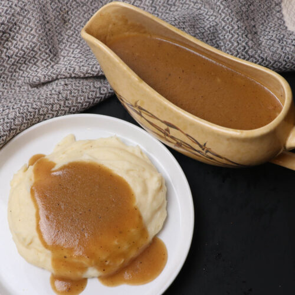

Mashed potatoes are a classic comfort food made by boiling and crushing starchy or waxy potatoes. Traditionally blended with butter, milk, and simple seasonings like salt and pepper, the spuds are whipped into a rich, velvety side dish that is frequently served alongside roasted meats and savory gravies.